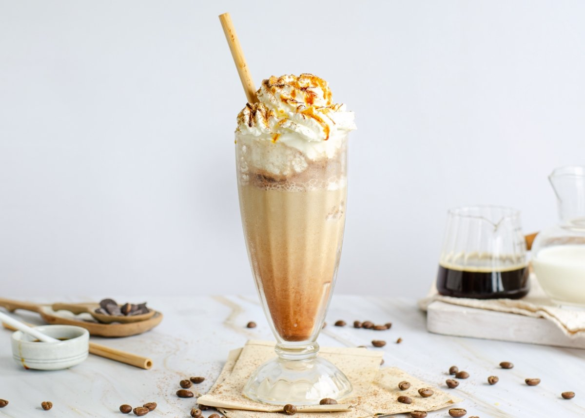
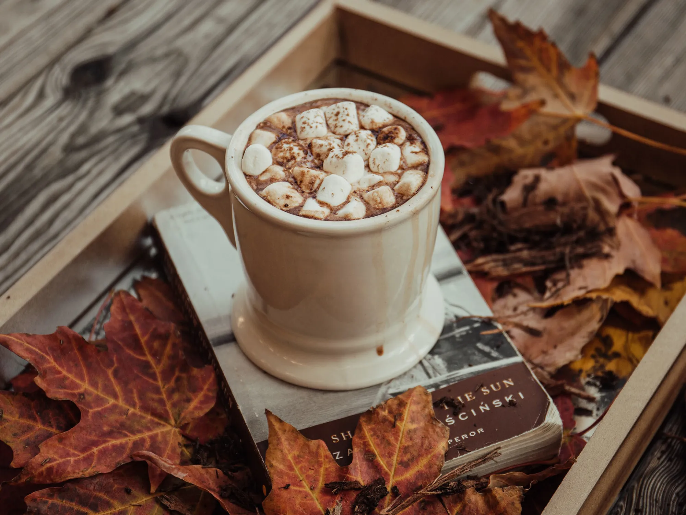

Últimos Blogs

Café para empezar tu día
29 Noviembre 2022Consejos para preparar el mejor café en casa y empezar tu jornada con energía.
Leer más

Recetas de frappuccinos
15 Diciembre 2022Aprende a preparar deliciosos frappuccinos caseros para refrescarte en días calurosos.
Leer más

El origen del café
10 Enero 2023Descubre la historia del café, desde su descubrimiento hasta cómo llegó a nuestras mesas.
Leer más

Beneficios del café
25 Febrero 2023Explora los beneficios del café para tu salud y cómo consumirlo de manera responsable.
Leer más

Top cafeterías
12 Marzo 2023Conoce las mejores cafeterías para disfrutar un café único en tu ciudad.
Leer más